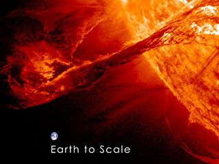
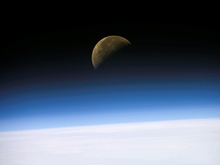

Quick Facts
- Day: 23.9 hours
- Year: 365.25 days
- Radius: 3,959 miles | 6,371 kilometers
- Planet Type Terrestrial
- Moons: 1
Earth is the third planet from the sun and the fifth largest in the solar system. Just slightly larger than nearby Venus, Earth is the biggest of the terrestrial planets. Our home planet is the only planet in our solar system known to harbor living things.
The name Earth is at least 1,000 years old. All of the planets, except for Earth, were named after Greek and Roman gods and goddesses. However, the name Earth is an English/German word, which simply means the ground.
This page provides a brief overview of our home planet. For a comprehensive look at Earth, visit NASA's Earth Science Division.
Size and Distance
With a radius of 3,959 miles (6,371 kilometers), Earth is the biggest of the terrestrial planets, and the fifth largest planet overall.
From an average distance of 93 million miles (150 million kilometers), Earth is exactly one astronomical unit away from the sun because one astronomical unit (abbreviated as AU), is the distance from the sun to Earth. This unit provides an easy way to quickly compare planets' distances from the sun.
It takes about eight minutes for light from the sun to reach our planet.
Orbit and Rotation
As Earth orbits the sun, it completes one rotation every 23.9 hours. It takes 365.25 days to complete one trip around the sun. That extra quarter of a day presents a challenge to our calendar system, which counts one year as 365 days. To keep our yearly calendars consistent with our orbit around the sun, every four years we add one day. That day is called a leap day, and the year it's added to is called a leap year.
Earth's axis of rotation is tilted 23.4 degrees with respect to the plane of Earth's orbit around the sun. This tilt causes our yearly cycle of seasons. During part of the year, the northern hemisphere is tilted toward the sun and the southern hemisphere is tilted away. With the sun higher in the sky, solar heating is greater in the north producing summer there. Less direct solar heating produces winter in the south. Six months later, the situation is reversed. When spring and fall begin, both hemispheres receive roughly equal amounts of heat from the sun.
Formation
When the solar system settled into its current layout about 4.5 billion years ago, Earth formed when gravity pulled swirling gas and dust in to become the third planet from the sun. Like its fellow terrestrial planets, Earth has a central core, a rocky mantle and a solid crust.
Structure
Earth is composed of four main layers, starting with an inner core at the planet's center, enveloped by the outer core, mantle and crust.
The inner core is a solid sphere made of iron and nickel metals about 759 miles (1,221 kilometers) in radius. There the temperature is as high as 9,800 degrees Fahrenheit (5,400 degrees Celsius). Surrounding the inner core is the outer core. This layer is about 1,400 miles (2,300 kilometers) thick, made of iron and nickel fluids.
In between the outer core and crust is the mantle, the thickest layer. This hot, viscous mixture of molten rock is about 1,800 miles (2,900 kilometers) thick and has the consistency of caramel. The outermost layer, Earth's crust, goes about 19 miles (30 kilometers) deep on average on land. At the bottom of the ocean, the crust is thinner and extends about 3 miles (5 kilometers) from the sea floor to the top of the mantle.
Surface
Like Mars and Venus, Earth has volcanoes, mountains and valleys. Earth's lithosphere, which includes the crust (both continental and oceanic) and the upper mantle, is divided into huge plates that are constantly moving. For example, the North American plate moves west over the Pacific Ocean basin, roughly at a rate equal to the growth of our fingernails. Earthquakes result when plates grind past one another, ride up over one another, collide to make mountains, or split and separate.
Earth's global ocean, which covers nearly 70 percent of the planet's surface, has an average depth of about 2.5 miles (4 kilometers) and contains 97 percent of Earth's water. Almost all of Earth's volcanoes are hidden under these oceans. Hawaii's Mauna Kea volcano is taller from base to summit than Mount Everest, but most of it is underwater. Earth's longest mountain range is also underwater, at the bottom of the Arctic and Atlantic oceans. It is four times longer than the Andes, Rockies and Himalayas combined.
Atmosphere
Near the surface, Earth has an atmosphere that consists of 78 percent nitrogen, 21 percent oxygen, and 1 percent other gases such as argon, carbon dioxide and neon. The atmosphere affects Earth's long-term climate and short-term local weather and shields us from much of the harmful radiation coming from the sun. It also protects us from meteoroids, most of which burn up in the atmosphere, seen as meteors in the night sky, before they can strike the surface as meteorites.
Potential for Life
Earth has a very hospitable temperature and mix of chemicals that have made life possible here. Most notably, Earth is unique in that most of our planet is covered in water, since the temperature allows liquid water to exist for extended periods of time. Earth's vast oceans provided a convenient place for life to begin about 3.8 billion years ago.
Moons
Earth is the only planet that has a single moon. Our moon is the brightest and most familiar object in the night sky. In many ways, the moon is responsible for making Earth such a great home. It stabilizes our planet's wobble, which has made the climate less variable over thousands of years.
Earth sometimes temporarily hosts orbiting asteroids or large rocks. They are typically trapped by Earth's gravity for a a few months or years before returning to an orbit around the sun. Some asteroids will be in a long "dance" with Earth as both orbit the sun.
Some moons are bits of rock that were captured by a planet's gravity, but our moon is likely the result of a collision billions of years ago. When Earth was a young planet, a large chunk of rock smashed into it, displacing a portion of Earth's interior. The resulting chunks clumped together and formed our moon. With a radius of 1,080 miles (1,738 kilometers), the moon is the fifth largest moon in our solar system (after Ganymede, Titan, Callisto and Io).
The moon is farther away from Earth than most people realize. The moon is an average of 238,855 miles (384,400 kilometers) away. That means 30 Earth-sized planets could fit in between Earth and the moon.
Rings
Earth has no rings
Magnetosphere
Our planet's rapid rotation and molten nickel-iron core give rise to a magnetic field, which the solar wind distorts into a teardrop shape in space. (The solar wind is a stream of charged particles continuously ejected from the sun.) When charged particles from the solar wind become trapped in Earth's magnetic field, they collide with air molecules above our planet's magnetic poles. These air molecules then begin to glow and cause aurorae, or the northern and southern lights.
The magnetic field is what causes compass needles to point to the North Pole regardless of which way you turn. But the magnetic polarity of Earth can change, flipping the direction of the magnetic field. The geologic record tells scientists that a magnetic reversal takes place about every 400,000 years on average, but the timing is very irregular. As far as we know, such a magnetic reversal doesn't cause any harm to life on Earth, and a reversal is very unlikely to happen for at least another thousand years. But when it does happen, compass needles are likely to point in many different directions for a few centuries while the switch is being made. And after the switch is completed, they will all point south instead of north.
Exploration
Earth is made up of complex, interactive systems that create a constantly changing world that we are striving to understand. From the vantage point of space, we are able to observe our planet globally, using sensitive instruments to understand the delicate balance among its oceans, air, land and life. NASA satellite observations help study and predict weather, drought, pollution, climate change, and many other phenomena that affect the environment, economy and society.
Significant Dates:
- 1609: Thomas Harriot becomes the first person to use a telescope aimed at the sky and sketches the moon. Later he made the first maps of the moon.
- 1610: Galileo Galilei publishes scientific observations of the moon in Sidereus Nuncius (Starry Messenger).
- 1959-1976: The U.S.S.R.'s Luna program of 17 robotic missions achieves many "firsts" — including the first glimpse of the far side of the moon — and three sample returns.
- 1961-1968: The U.S. Ranger, Lunar Orbiter, and Surveyor robotic missions pave the way for Apollo human lunar landings.
- 1969: Astronaut Neil Armstrong is the first human to walk on the moon's surface.
- 1994-1999: Clementine and Lunar Prospector data suggest that water ice may exist at the lunar poles.
- 2003: The European Space Agency's SMART-1 lunar orbiter inventories key chemical elements.
- 2007-2008: Japan's second lunar spacecraft, Kaguya, and China's first lunar spacecraft, Chang'e 1, both begin one-year missions orbiting the moon; India's Chandrayaan-1 soon follows in lunar orbit.
- 2008: The NASA Lunar Science Institute is formed to help lead NASA's research activities related to lunar ploration goals.
- 2009: NASA's Lunar Reconnaissance Orbiter and LCROSS launch together, beginning the U.S. return to lunar exploration. In October, LCROSS was directed to impact a permanently shadowed region near the lunar south pole, resulting in the discovery of water ice. LRO is still exploring the moon from orbit.
- 2011: Twin GRAIL spacecraft launch to map the interior of the moon from crust to core, and NASA begins the ARTEMIS mission to study the moon's interior and surface composition.
- 2013: NASA launches LADEE to gather detailed information about the structure and composition of the thin lunar atmosphere. The successful mission ended in April 2014.
- 14 December 2013: China becomes the third nation to safely land on the moon with the touchdown and deployment of Chang'e 3's Yutu rover.